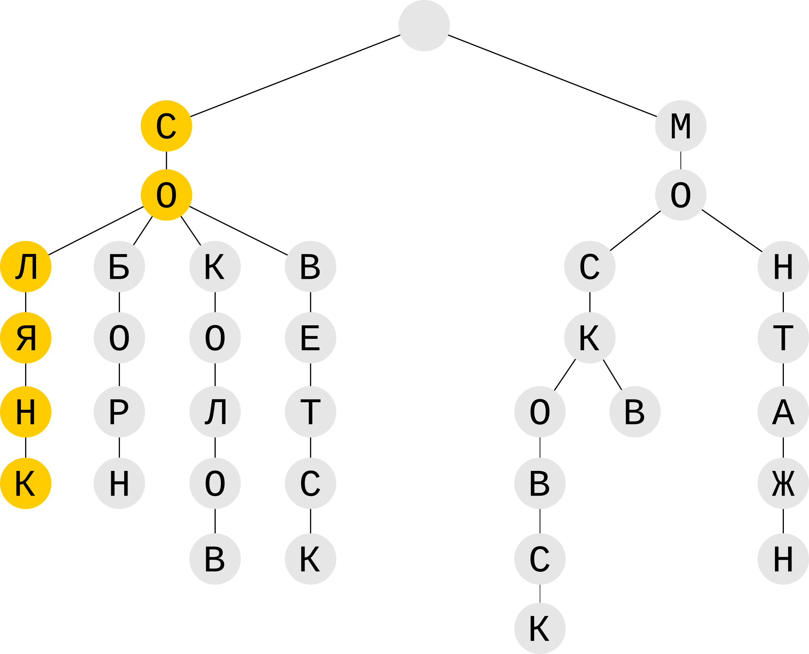

Свой геокодер на PHP
Владимир Лила
Прямой геокодер
Пользователь указывает адрес:
г Ростов-на-Дону ул Города Волос 6
Находим координаты:
47.227341, 39.706110
Обратный геокодер
Пользователь указывает точку:
47.227341, 39.706110
Находим адрес:
г Ростов-на-Дону ул Города Волос 6
Исходные данные
Исходный формат может быть любой. Например, у нас таблица в БД:
| Адрес |
Широта |
Долгота |
| г Ростов-на-Дону ул Города Волос 6 |
47.227341 |
39.706110 |
| г Ростов-на-Дону ул Социалистическая 15 |
47.217733 |
39.701547 |
| г Москва ул Солянка 15 |
55.750819 |
37.642411 |
| ... |
... |
... |
Как же построить поисковый индекс?
1. Нужен уникальный идентификатор адреса
1001 => г Ростов-на-Дону ул Города Волос 6
1002 => г Ростов-на-Дону ул Социалистическая 15
1003 => г Москва ул Солянка 15
Как же построить поисковый индекс?
2. Нужен токенизатор
г Ростов-на-Дону ул Города Волос 6:
['г', 'Ростов-на-Дону', 'ул', 'Города', 'Волос', '6']
г Ростов-на-Дону ул Социалистическая 15:
['г', 'Ростов-на-Дону', 'ул', 'Социалистическая', '15']
г Москва ул Солянка 15:
['г', 'Москва', 'ул', 'Солянка', '15']
Как же построить поисковый индекс?
3. Нужен фильтр
Приводим все к одному регистру
Г РОСТОВ-НА-ДОНУ УЛ СОЦИАЛИСТИЧЕСКАЯ 15
Убираем стоп-слова: "г", "ул", "пр", "пер"
Г РОСТОВ-НА-ДОНУ УЛ СОЦИАЛИСТИЧЕСКАЯ 15
Стемминг
Г РОСТОВ-НА-ДОНУ УЛ СОЦИАЛИСТИЧЕСКАЯ 15
Как же построить поисковый индекс?
4. Получаем фильтрованные токены
г Ростов-на-Дону ул Города Волос 6:
['РОСТОВ-НА-ДОН', 'ГОРОД', 'ВОЛОС', '6']
г Ростов-на-Дону ул Социалистическая 15:
['РОСТОВ-НА-ДОН', 'СОЦИАЛИСТИЧЕСК', '15']
г Москва ул Солянка 15:
['МОСКВ', 'СОЛЯНК', '15']
Как же построить поисковый индекс?
5. Итого имеем пока индекс на "листе бумаги":
'РОСТОВ-НА-ДОН' => [1001, 1002]
'ГОРОД' => [1001]
'ВОЛОС' => [1001]
'6' => [1001]
'СОЦИАЛИСТИЧЕСК' => [1002]
'15' => [1002, 1003]
'МОСКВ' => [1003]
'СОЛЯНК' => [1003]
Как перенести индекс в PHP?
-
BTREE
O(log N)
-
Префиксное дерево (TRIE)
O(M) M - длина поисковой строки
-
Hash-таблица
O(1) в лучшем случае
Остановимся пока на Hash-таблице
- Высокая скорость O(1)
- Ассоциативные массивы PHP "из коробки" - это hash-таблицы
Простейший код с индексом в памяти на PHP
- $index = [
- 'РОСТОВ-НА-ДОН' => [1001, 1002],
- 'ГОРОД' => [1001],
- 'ВОЛОС' => [1001],
- '6' => [1001],
- 'СОЦИАЛИСТИЧЕСК' => [1002],
- '15' => [1002, 1003],
- 'МОСКВ' => [1003],
- 'СОЛЯНК' => [1003],
- ];
Как использовать индекс для поиска?
- $counter = [];
- $bestId = null;
- // $tokens = ['РОСТОВ-НА-ДОН', 'СОЦИАЛИСТИЧЕСК', '15']
- $tokens = $tokenizer->getTokens('г Ростов-на-Дону ул Социалистическая 15');
- foreach ($tokens as $token) {
- $addressIds = $index[$token] ?? [];
- foreach ($addressIds as $id) {
- $counter[$id] = isset($counter[$id]) ? $counter[$id] + 1 : 1;
- if ($bestId === null || $counter[$bestId] < $counter[$id]) {
- $bestId = $id;
- }
- }
- }
- // $counter = [1001 => 1, 1002 => 3, '1003' => 1]
- // $bestId = 1002
- echo getAddressById($bestId)->locationString();
Как хранить индекс на диске?
- JSON
- PHP serialize()
- PHP файл
Как шарить между процессами?
- Реляционные БД? üëé
- Колоночные БД? üëé
- Redis? üëé
- Memcached? üëé
- APCu üî•
Итак, остановились на APCu
- Пишет только в ОЗУ
- Один индекс для всех php-процессов
- Разделяемая память (Shared memory)
- Нет сетевых расходов
- Как итог, самый быстрый
-
Сохраняет значение по ключу
apcu_store()
-
Возвращает значение по ключу
apcu_fetch()
-
Очистить всю память APCu
apcu_clear_cache()
А как же опечатки?
Помогут нам триграммы
Каждое слово делится на сочетания – триграммы
Например, для "Ростов":
__Р
_РО
РОС
ОСТ
СТО
ТОВ
ОВ_
В__
При поиске похожей фразы ищутся одинаковые триграммы
Поиск по фразе "Растов":
__Р
_РА
РАС
АСТ
СТО
ТОВ
ОВ_
В__
Чем больше равных триграмм, тем больше фраза схожа с исходной
Нужен индекс по триграммам!
Индекс для триграмм
Нужны уникальные идентификаторы токенов
// переулок Соляной спуск
301 => СОЛЯН
// ул Солянка
302 => СОЛЯНК
- $index = [
- '__С' => [301, 302],
- '_СО' => [301, 302],
- 'СОЛ' => [301, 302],
- 'ОЛЯ' => [301, 302],
- 'ЛЯН' => [301, 302],
- 'ЯН_' => [301],
- 'Н__' => [301],
- 'ЯНК' => [302],
- 'НК_' => [302],
- 'К__' => [302],
- ];
Как использовать индекс триграмм для опечаток?
- $bestTokenId = null;
- // $trigrams = ['__C', '_СА', 'САЛ', 'АЛЯ', 'ЛЯН', 'ЯН_', 'Н__']
- $trigrams = getTrigrams('САЛЯН');
- foreach ($trigrams as $trigram) {
- // [301, 302], [], [], [], [301, 302], [301], [301]
- $tokenIds = $index[$trigram] ?? [];
- foreach ($tokenIds as $id) {
- $counter[$id] = isset($counter[$id]) ? $counter[$id] + 1 : 1;
- if ($bestTokenId === null || $counter[$bestTokenId] < $counter[$id]) {
- $bestTokenId = $id;
- }
- }
- }
- // $counter = [301 => 4, 302 => 2], $bestTokenId = 301
- echo getTokenById($bestTokenId); // СОЛЯН
Как быть с подсказками (suggestions)?
Пользователь начинает ввод "Солян". Хотим предложить варианты:
г Ростов-на-Дону ул Соляника
г Ростов-на-Дону пер Соляной Спуск
г Москва Солянка
г Москва Солянский тупик
г Москва Солянский проезд
–ü–æ—Ö–æ–∂–µ, –Ω–∞—à–∏ индексы нам –Ω–µ –ø–æ–º–æ–≥—É—Ç ü§î
Префиксное дерево для подсказок
Дерево для токенов:
СОЛЯНК
СОБОРН
СОКОЛОВ
СОКОЛ
СОВЕТСК
МОСКВ
МОСКОВСК
МОНТАЖН
Префиксное дерево для подсказок
Дерево для токенов:
СОЛЯНК
СОБОРН
СОКОЛОВ
СОКОЛ
СОВЕТСК
МОСКВ
МОСКОВСК
МОНТАЖН

Префиксное дерево для подсказок
Дерево для токенов:
СОЛЯНК
СОБОРН
СОКОЛОВ
СОКОЛ
СОВЕТСК
МОСКВ
МОСКОВСК
МОНТАЖН
Сжатое префиксное дерево
Индекс на PHP для сжатого префиксного дерева
- $index = [
- 'СО' => [
- 'ЛЯНК' => ['*' => [100, 101, ...]],
- 'БОРН' => ['*' => [200, 201, ...]],
- 'КОЛ' => [
- '*' => [300, 301, ...],
- 'ОВ' => ['*' => [400, 401, ...]],
- ],
- 'ВЕТСК' => ['*' => [500, 501, ...]],
- ],
- 'МО' => [
- 'СК' => [
- 'ОВСК' => ['*' => [600, 601, ...]],
- 'В' => ['*' => [700, 701, ...]],
- ],
- 'НТАЖН' => ['*' => [800, 801, ...]],
- ],
- ];
Основная проблема производительности
Слишком популярные токены:
-
МОСКОВ
3.5+ млн адресов
-
1...200
500+ тыс улиц
Для адреса "г Москва ул Солянка 1" пересечений:
3.5 млн + 500 + 500 тыс
4+ млн
Оптимизация
- Для поиска городов отдельный индекс (без улиц и домов)
- Отдельные индексы по улицам для каждого города
- Отдельные индексы по номерам домов для каждой улицы
Время поиска адреса:
ДО оптимизации:
0.300-0.400 сек
üò±
ПОСЛЕ оптимизации:
0.0001 сек
üòé
Спасибо за внимание!